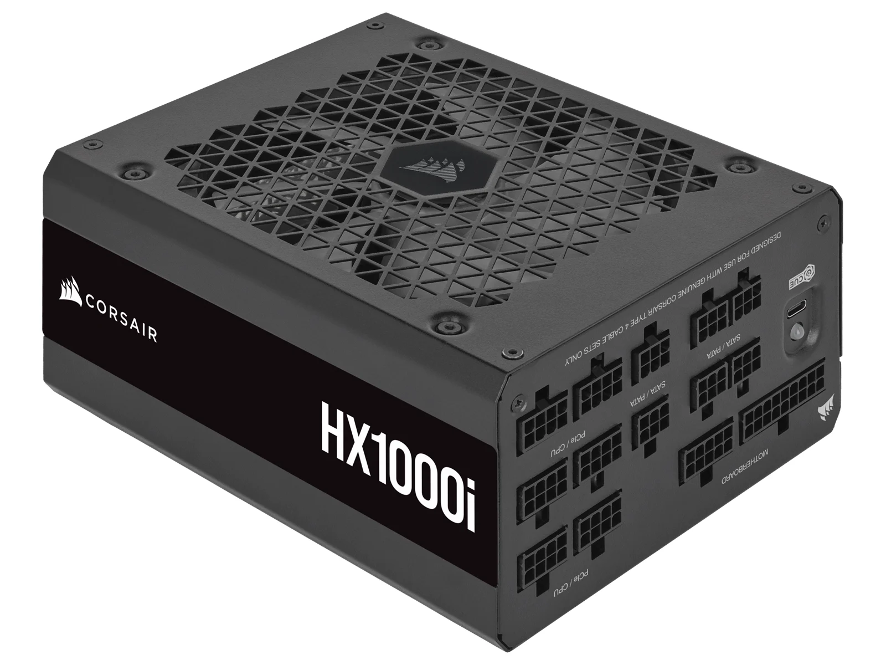

PSU, eller strømforsyning, er selve hjertet i datamaskinen. Akkurat som hjertet pumper blod rundt i kroppen, pumper strømforsyningen strøm til alle de andre delene i maskinen. Uten den fungerer rett og slett ingenting. Den tar strømmen fra stikkontakten i veggen og gjør den om til riktig type strøm som de følsomme datadelene kan bruke.
En veldig vanlig feil mange gjør når de bygger sin aller første PC er å bruke hele budsjettet på et kraftig skjermkort og en rask prosessor. Deretter kjøper de den absolutt billigste strømforsyningen de kan finne for å spare penger. Det er en skikkelig dårlig idé. En billig PSU av dårlig kvalitet kan i verste fall kortslutte og ta med seg alle de andre dyre delene dine i døden når den smeller.
Når du skal velge en PSU er det et par ting du må tenke på. For det første må den ha nok watt til å drive hele maskinen din. Spesielt moderne skjermkort trekker enorme mengder strøm når du spiller tunge spill. Hvis strømforsyningen er for svak vil datamaskinen bare slå seg av midt i spillet.
For det andre bør du alltid se etter et kvalitetsstempel som kalles for 80 Plus. Dette betyr at strømforsyningen er testet for å være effektiv. Ofte ser du at de er merket med farger som bronse, gull eller platina. Et gullmerke betyr at den er veldig flink til å ikke kaste bort strømmen som unødvendig varme, noe som er bra for både strømregningen og temperaturen inne i datamaskinen.
Mange velger også en modulær strømforsyning i dag. Det betyr rett og slett at du kan koble av alle de kablene du ikke trenger å bruke. Da slipper du å ha et gigantisk kråkerede av ledninger liggende å slenge i bunnen av maskinen, og hele bygget ditt ser mye ryddigere ut.

^ Eksempel bilde ^
kilder: Wikipedia